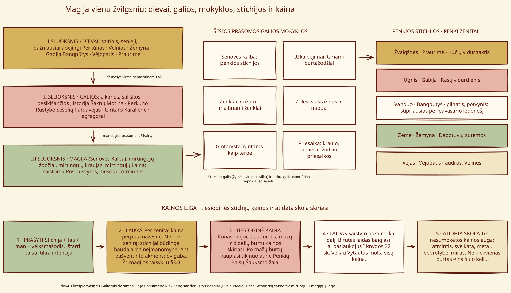

Magijos žinija¶
A compendium of the saga’s magic: speech, signs, price and oath
„Write down what the craft costs, and you will have written down everything else.“
[The saga’s invention] Marginal note in the amber-keepers‘ tally-book.
This compendium gathers the rules of the saga’s magic in the manner of an appendix: scholarly in tone, with in-world excerpts, tables and worked examples from the books. Everything that is the saga’s own invention is labelled [The saga’s invention]; claims about real Baltic religion and folk practice are labelled [Historical record], and where the sources are doubtful the page says so.
The system on one page¶


The craft at a glance: three layers (gods, forces, craft), six schools, five elements and the cost flow¶
The nine chapters¶
Chapter |
What it covers |
|---|---|
How a working is asked: the formula, the five voices, naming and the cost clause |
|
Twelve carved signs, with a glyph chart |
|
Stars, Fire, Water, Earth and Wind, and the calendar of their zeniths |
|
The Law of Balance, eight worked bills, surety and unpaid debts |
|
Amber as a medium; the pebble as barometer of truth |
|
Priesaika, the Silent Pact, the Pack’s Word and what follows a breach |
|
Six schools, six tiers, the last žyniai |
|
Limits, taboos and why history cannot be bent |
|
A spoiler-aware guide to spotting the rules in scenes |
Where to begin¶
New readers should start with Reading the Craft, which keeps spoilers under book headings. Readers of the whole series can begin at The Ancient Speech and follow the chapters in order. The encyclopedia pages remain the reference for single entities: Senovės Kalba, the Silent Pact and the elements.
History and invention¶
History and the Saga distinguishes documented anchors from later traditions, supernatural explanations and deliberate changes to historical circumstances. It contains spoilers for all six books.